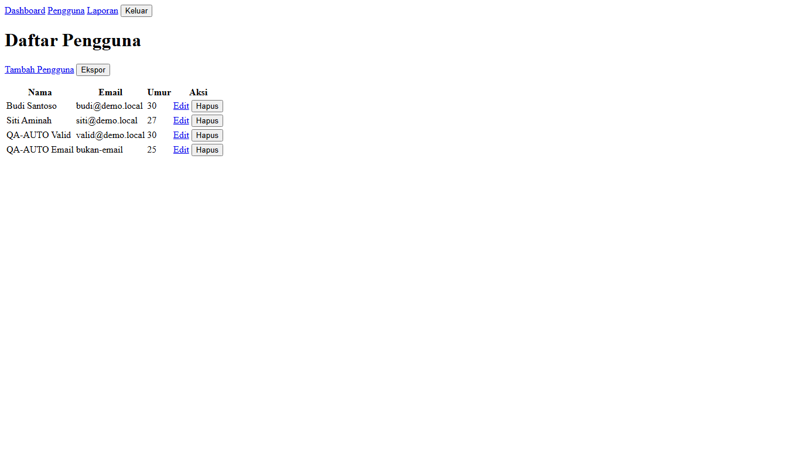

QA Agent
Laporan Hasil Pengujian
Web HR, modul Pengguna
- Aplikasi
- hr-dev.kantor.local
- Environment
- Dev / UAT
- Tanggal pengujian
- 5 November 2026, 10.12
- Durasi
- 12 menit
- Model AI
- z-ai/glm-5.3-flash
- Status review
- 3 dari 4 temuan sudah direview
Ringkasan
15
Test case
11
Pass
2
Fail
1
Perlu Review
1
Blocked
Pass rate 73%. Ditemukan 2 bug pada form Tambah Pengguna: input nama berapostrof menyebabkan error server, dan format email tidak divalidasi. Satu test case diblok karena tombol Hapus tidak boleh dieksekusi di run ini.
Temuan
BUG-001Nama dengan apostrof menyebabkan error server
Fail, Major
Langkah reproduksi (TC-PEN-003)
- Buka menu Pengguna, klik Tambah Pengguna
- Isi Nama "O'Brien", Email "obrien@demo.local", Umur "40"
- Klik tombol Simpan
Expected
Pengguna tersimpan dan muncul di daftarActual
Halaman Internal Server ErrorBukti teknis
HTTP 500 POST /usersCatatan reviewer
Bug valid. Nama dengan tanda petik umum di data karyawan.
BUG-002Email tanpa format valid tetap tersimpan
Fail, Minor
Langkah reproduksi (TC-PEN-002)
- Buka menu Pengguna, klik Tambah Pengguna
- Isi Email dengan "bukan-email", lengkapi Nama dan Umur
- Klik tombol Simpan
Expected
Muncul pesan validasi format emailActual
Data tersimpan tanpa pesan apa punCatatan reviewer
Dinaikkan dari Perlu Review menjadi Fail.
Daftar test case
| ID | Skenario | Tipe | Status |
|---|---|---|---|
| TC-PEN-001 | Tambah pengguna valid | Positif | Pass |
| TC-PEN-002 | Validasi format email | Validasi | Fail |
| TC-PEN-003 | Nama dengan apostrof | Boundary | Fail |
| TC-PEN-004 | Umur diisi huruf | Negatif | Pass |
| TC-PEN-005 | Nama dikosongkan | Validasi | Pass |
| TC-PEN-006 | Ekspor daftar pengguna | Positif | Perlu Review |
| TC-PEN-007 | Edit data pengguna | Positif | Pass |
| TC-PEN-008 | Hapus pengguna | Positif | Blocked |
| TC-PEN-009 | Umur batas maksimum | Boundary | Pass |
| TC-PEN-010 sampai TC-PEN-015: semua Pass, detail di lampiran | |||